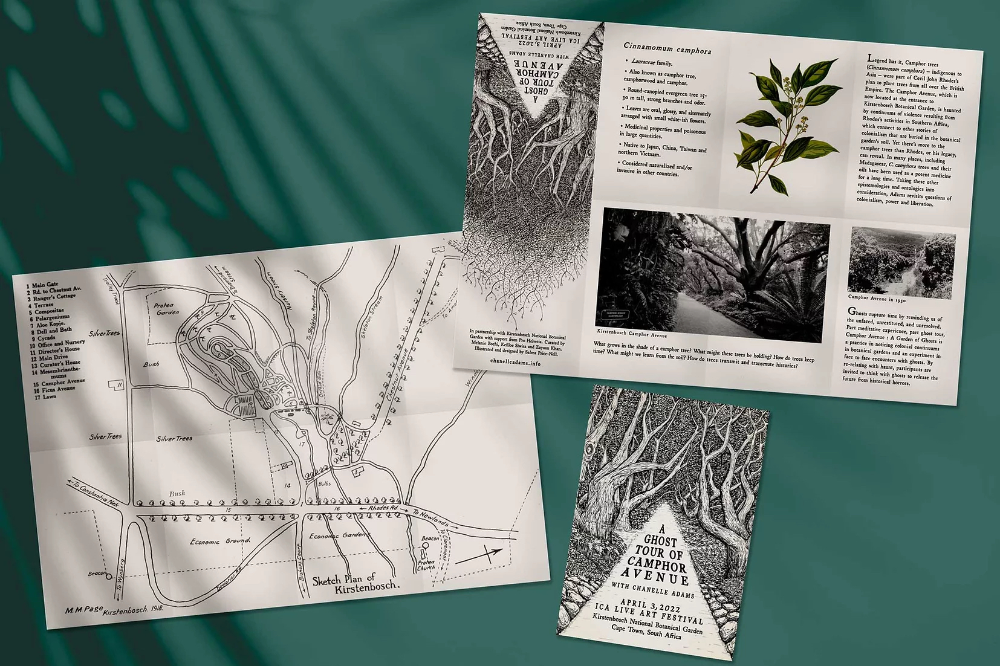

Updated May 2024
In October 2023, a curious group gathered for a performance of
Zaridaina which took place around jacaranda trees in Antaninarenina Garden in
Antananarivo, Madagascar. The ghost tour was produced in close collaboration with
Miranto Rafanomezana and made available as an audio guide in three languages (English,
French, Malagasy) with translations by Fanja Rabemiafara and Robin Rajaonarivelo.

Free Space sonic essay and guided meditation was installed at Yambi City 6 at the Plateforme Contemporaine in Kinshasa, Democratic Republic of the Congo in December 2023 as part of collaborative project Rencontres Plurielles.
During a residency with Kampnagel for the 2023 International Summer Festival and in dialogue with local residents, I developed Elbe River Ghosts – a performative city walk through Hamburg that conjures up spirits of the Elbe River. As one of Europe’s largest ports, Hamburg’s waterways harbor haunting histories of colonialism, capitalism, and ecocide. The sold-out ghost tour ran for three weekends and included three weekends of live performances and self-guided audio tours.
What kind of atmosphere is created by a greenhouse? How does a tropical plant keep time in Switzerland? And why does the corpse flower stink? Ghosts in the Greenhouse is an entirely self-guided audio tour of the Botanical Garden in Basel Switzerland which took place in the days leading up to the anticipated bloom of the corpse flower as part of group show “You may find yourself in a haunted space” at Ausstellungsraum Klingental.
“Ghost Museum” (2022) is a site-specific performance which took place at the Lausanne Museum of Natural History as part of Les Urbaines festival in Switzerland.
Earthly Delights (SOLD OUT), co-edited with Danielle Wu, was released in July 2022 with Tiger Strikes Asteroid, USA. From Brooklyn to Soweto, Paris and Portland, contributors tend to topics such as house plants, city gardens, national archives, and flower shops. Earthly Delights is an invitation to follow us down, down the rabbit’s hole, to a botanical world beyond your control. Imagine a rancorous garden party, where a curious cast of artists, educators, florists, historians, poets, and writers have assembled to ponder the unauthorized biographies we assign to plants. What is the difference between sweat and dew? A spine and a stem? A victory garden and a pandemic plot?
I had the honor of being invited to a roundtable “On ‘Worldmaking’" upon the occasion of Kapwani Kiwanga’s Zurich Art Prize 2022 at the Museum Haus Konstruktiv in Zurich moderated by Melanie Boehi with Andile Magengelele and Percy Zvomuya.
I published “The Audacity of Nature Docs: What Obama's 'Our National Parks' Leaves Out" and a dispatch from “Patagonia” at The Drift. (Read my first essay for this magazine on Madagascar’s plant medicine here ).

I read my essay “The Right To Rest (In Peace)” at the Sunlight Doesn’t Need a Pipeline at Stanley Picker Gallery, UK following a conversation on "Haunt" with Luiza Prado.
In the summer of 2022, I followed the history of the camphor tree across four continents to write the essay “The Trail of the Camphor” published by Adi Magazine. And wrote essay “This is the Deal” on the ways we drag plants through the drama of human history for e-flux.
Legend has it, Camphor trees (C. camphora) – indigenous to Asia – were part of Cecil John Rhodes' plan to plant trees from all over the British Empire at at the garden. The Camphor Avenue is haunted by continuums of violence resulting from Rhodes’s activities in Southern Africa, which connect to other stories of colonialism buried in the botanical garden’s soil. Yet there’s more to camphor trees than Rhodes, or his legacy, can reveal. In many places, including Madagascar, C. camphora trees and their oils have been used as a potent medicine for a long time. Taking these other epistemologies and ontologies into consideration, we revisit questions of colonialism, power, and liberation.
"In telling the autobiography of the trees, Adams hints at the hands that have historically been conscripted into caring for them. I begin to realise that this tour might not be about an external encounter with a ghost, but a subtle manoeuvring of our grief back into our own bodies. Adams soothes, “Haunt is just a desire for recognition.” - Review by Art Throb
I gave a virtual talk at La Loge's "Constellations for the Future: Stories on Ecology, Kinship and Sciences." How might thinking with plant medicine, colonial science archives, and the Malagasy independence movement generate a sense of possibility for the future?
In September 2021, I led a haunted walk through the Marseille
Funny Zoo in Longchamps Park.

Ghosts rupture time by reminding us of the unfaced, unrestituted, and unresolved.
Part meditative experience, part ghost tour, this performance is a practice in noticing
colonial hauntologies in everyday city landscapes and an experiment in face to face
encounters with ghosts. I invited participants to think with these ghosts by re-relating
with haunt to release the future from historical horrors.

I wrote about a small country with Big Pharma energy for The Drift, "The DJ and the Miracle Cure | The Perils of Postcolonial Medicine in Madagascar."
In September 2020, I facilitated “How To Use Meditation As A Technology For Liberation, Healing, and Reparations” to 50 participants at Black Womxn Time Camp 004 and contributed to the accompanying zine published by Black Quantum Futurism, whose text "Placing Time, Timing Space” I reviewed for the 2019 Chicago Architecture Biennial.
I am currently a writer in residence for the PLATFORM 2020: Utterances from the Chorus co-curated by Okwui Okpokwasili and Judy Hussie-Taylor with forthcoming texts on rehearsals of grief and proximity to the veil. I shared a guided meditation “archive medicine” (audio/text). This offering describes research as ritual and offers the possibility of making medicine in the archive
During NYC lockdown in March, I launched a
plant selfie content account.

In 2018, I was an artist in Residence at the Visual Arts Network of South Africa in
Johannesburg. My closing studio,
“Botany of Death” opened my practice of mapping linkages (past and present)
between colonial natural history and its afterlives (diaspora, memory, epistemologies,
etc) in un-disciplined, unruly, and unarticulated forms.

This past spring and summer, I was a guest on the Bea Bo show on Balamii radio. The epistolary soundscapes are archived here.
My text on mold and men, fungus and fugitivity, “The Archives Need to Breathe” ( Human x Nature 2018), was republished in 2020 by Paprika! At Yale and was included in Nomadic Archivist Project Co-founder Steven G. Fullwood’s event at NYU “The Not Obvious: Black Archives in Other Places.”
I delivered an artist talk “Plants As Propaganda" to an audience of plants and people in
Athens, Greece at the
Botanic Fictions, On the Political Narratives of Plants symposium curated by
Anja Luckenkemper at the Goethe Institut.
 “Plant Propaganda” contributions to the Botanic Fictions, On the Political
Narratives of Plants zine.
“Plant Propaganda” contributions to the Botanic Fictions, On the Political
Narratives of Plants zine.
As part of
Second Spring in October 2019, I facilitated a group through a ceremonious
experiment in transmission “Possessive poisson poison"
around Trout Lake on the unceded territory of the Coast Salish peoples currently known
as Vancouver. We explored relaying information, not through paper trails but hidden
communications and transference of impressions.
These events were curated by Julian Hou with Vivo Media Arts.